MyFirstFunction <- function(){
message("Always spin-down your antibodies!")
}09 - It’s Raining Functions!


For the YouTube livestream recording, see here
For screen-shot slides, click here
Background
Welcome to the ninth week of the “Cytometry in R course”. Over the last couple months, we have gradually built out a foundation of basic R skills, and explored some of the flow cytometry analysis infrastructure that we will be using throughout the course.
In the process, we have extensively used functions, i.e., the tools within a toolbox, to carry out various useful tasks. We saw during Week 01 that when we install new packages, we gain access to their functions, enabling us to extend far beyond the boundaries of what the base R software is capable of by itself (as long as we remember to to attahc the package to our local environment (via the library() call) of course).
We also saw how just like tools in a toolbox, different functions take different types of input objects, and the outputs we get back can be modified by providing additional arguments (typically show-in within ()).
While it is great that the R community as a whole has developed a small horde of useful functions, sometimes we need something that is not yet available. Today we will learn how to write our own functions, which will enable us to start exploring beyond the bounds of what others have already done. In the process, we will learn of a couple ways to iterate through vectors or lists, reducing the times we need to copy and paste the same of codes for slightly different inputs, and start to gain an appreciation of functional programming in the R context.
Walk Through
Housekeeping
As we do every week, on GitHub, sync your forked version of the CytometryInR course to bring in the most recent updates. Then within Positron, pull in those changes to your local computer.
For YouTube walkthrough of this process, click here
After setting up a “Week09” project folder, copy over the contents of “course/00_Functions/data” to that folder. This will hopefully prevent merge issues next week when attempting to pull in new course material. Once you have your new project folder organized, remember to commit and push your changes to GitHub to maintain remote version control.
If you encounter issues syncing due to the Take-Home Problem merge conflict, see this walkthrough. The updated homework submission protocol can be found here
Functions
Structure
At the most basic level, what makes up a function in R? Let’s take a look at a simple example.
The name of the function is defined by placing it on the left-side of the assignment arrow. To the right we place the function(), which conveys to R that it will be creating a function. Although currently empty, individual function arguments that will make up the inputs are placed within the parenthesis (). And finally, the actual code being run by the function is palced within the curly brackets {}.
When we run this code-block, we end up creating a function. We can see this appear within our local environment, appearing under the variables tab in the right-secondary sidebar.
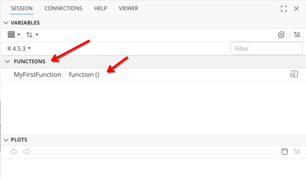
Once we have created a function that is present in our environment, we are able to run/use it. In the case of the first function example, no inputs or arguments are needed (as there is nothing between the ()). For output, all that is present within the {} is code to send a message to console, which we will get back if we run the function by calling its name in our console.
MyFirstFunction()Always spin-down your antibodies!Arguments
In the case of our first function above, no input arguments were provided, meaning the function was entirely self-contained, allowing us to retrieve the code output by simply running the function name.
MyFirstFunction()Always spin-down your antibodies!Lets modify this initial self-contained argument to allow us to provide an input argument to change the output message. To modify our function to accept input arguments, we decide on our argument name, and place it within the parenthesis (). From there, we can modify our line of code within the {} to achieve our desired outcome.
MySecondFunction <- function(BestFluorophore){
message("Unquestionably, the best fluorophore is ", BestFluorophore)
}And we can check to make sure it is running correctly similar to how we would for any function we might encounter, by running the line of code
MySecondFunction(BestFluorophore = "APC")Unquestionably, the best fluorophore is APCLets continue our roll and see if we can provide multiple arguments to our function. We can achieve this by separating individual function arguments within the () with commas. Don’t forget to also make sure the argument you specified within the () is also accounter for within the {}.
MyThirdFunction <- function(BestFluorophore, WorstFluorophore){
message("Unquestionably, the best fluorophore is ", BestFluorophore)
message("And by far, the worst fluorophore is ", WorstFluorophore)
}MyThirdFunction(BestFluorophore = "APC", WorstFluorophore = "PerCP-Cy5.5")Unquestionably, the best fluorophore is APCAnd by far, the worst fluorophore is PerCP-Cy5.5Once we have a function set up that accepts multiple arguments, what happens if we forget to provide an argument? Let’s intentionally forget “WorstFluorophore” and see.
MyThirdFunction(BestFluorophore="APC")Unquestionably, the best fluorophore is APCError in `MyThirdFunction()`:
! argument "WorstFluorophore" is missing, with no defaultAs you see, we get back an error. The reason for this is that a function lives in relative isolation from the rest of our R session. It typically can only see what you provided as inputs, or what is spun up by the code within the function itself.
We can also provide default values for our given arguments. For example, we could modify to provide WorstFluorophore default by setting a value equal to it within the ()
MyFourthFunction <- function(BestFluorophore, WorstFluorophore="PerCP-Cy5.5"){
message("Unquestionably, the best fluorophore is ", BestFluorophore)
message("And by far, the worst fluorophore is ", WorstFluorophore)
}Which would then allow for the partially incomplete function to fall back on the default argument.
MyFourthFunction(BestFluorophore="APC")Unquestionably, the best fluorophore is APCAnd by far, the worst fluorophore is PerCP-Cy5.5However, you are not locked in on your default option, as if you provide an actual argument, it will take preference over the provided default.
MyFourthFunction(BestFluorophore="APC", WorstFluorophore="Zombie Aqua")Unquestionably, the best fluorophore is APCAnd by far, the worst fluorophore is Zombie AquaIteration
Recalling back to Week 02, we ended up creating our first vector, which contained a list of fluorophores.
Fluorophores <- c("BV421", "FITC", "PE", "APC")
str(Fluorophores) chr [1:4] "BV421" "FITC" "PE" "APC"Individual fluorophores from this vector can be provided as arguments to our function, by specifying their index location within the vector. For example:
MySecondFunction(BestFluorophore = Fluorophores[1])Unquestionably, the best fluorophore is BV421If we wanted to check the output message for each item in our vector, one approach would be to copy-and-paste the line of code, and swap out the vector index position for each new line.
MySecondFunction(BestFluorophore = Fluorophores[2])Unquestionably, the best fluorophore is FITCMySecondFunction(BestFluorophore = Fluorophores[3])Unquestionably, the best fluorophore is PEMySecondFunction(BestFluorophore = Fluorophores[4])Unquestionably, the best fluorophore is APCWhile achievable, this ends up producing several lines of code. As you get further into the course, and more code is written to tidy individual dataframes, generate individual plots, having to copy-and-paste repeated blocks of text that only change based on the input values can become a chore.
For this reason, there are a couple ways that we can sequentially pass through the objects within a vector or list to our function of interest, and retrieve the outputs that result.
For-loops
A for-loop is one way to iterate through a vector. The syntax can look quite startling when encountered for a first time.
for (Name in Fluorophores){
MySecondFunction(BestFluorophore=Name)
}In a way, it is similar to the “if” conditional we have encountered previously, with “for” being syntax highlighted. Immediately after for we find our parenthesis (), followed by {} that surround individual lines of code.
Within the (), the vector or list is being iterated through is placed after “in” (which also ends up being syntax highlighted). So in this case, we place our vector Fluorophores.
For what is placed before “in”, we basically provide an argument that will stand-in for the “i-nth” item in our vector. You will often see “i” used, but you can call it whatever you like, so we will use Name in this case. You will see this “i-nth” standin is then used in place of the value within our line of code present within the {}.
Consequently, when we run the for-loop, we get the following outputs:
for (Name in Fluorophores){
MySecondFunction(BestFluorophore=Name)
}Unquestionably, the best fluorophore is BV421Unquestionably, the best fluorophore is FITCUnquestionably, the best fluorophore is PEUnquestionably, the best fluorophore is APCCan these outputs be saved? Yes they can, but some modification will be needed. Messages in R are kind of ephemeral and not saved, we could modify our original function from using messsages()to a more permanent paste0 statement to show-case this in a for-loop.
MySecondFunctionPartB <- function(BestFluorophore){
Message <- paste0("Unquestionably, the best fluorophore is ", BestFluorophore)
Message
}Secondly, we would need to save the output to something external that can be retrieved. This can be accomplished by setting up an external list using the list() function, and then adding the message to the list for each iteration within the for-loop brackets {}
MyOutputList <- list()
SavedOutputs <- for (Name in Fluorophores){
InthMessage <- MySecondFunctionPartB(BestFluorophore=Name)
MyOutputList[[Name]] <- InthMessage
}
MyOutputList$BV421
[1] "Unquestionably, the best fluorophore is BV421"
$FITC
[1] "Unquestionably, the best fluorophore is FITC"
$PE
[1] "Unquestionably, the best fluorophore is PE"
$APC
[1] "Unquestionably, the best fluorophore is APC"So as you can see, for-loops are a bit complicated, but can be useful once you get the hang of the structure and syntax. One thing to note, is that they can be slow (especially if you are haven’t predefined the list size), which is why opinions on their use will be contested by individual R developers.
purrr
When iterating through a vector or list to pass the values to a function, a commonly used alternative to for-loops are higher-order functions like the walk() and map() functions from the purrr package. These are the tidyverse equivalents to base R apply(), lapply(), etc. but with less nuanced argument syntax. We will use these frequently throughout the rest of the course.
library(dplyr)
Attaching package: 'dplyr'The following objects are masked from 'package:stats':
filter, lagThe following objects are masked from 'package:base':
intersect, setdiff, setequal, unionlibrary(purrr)Let’s first see how these two differ, starting with walk()
walk(.x=Fluorophores, .f=MySecondFunction)Unquestionably, the best fluorophore is BV421Unquestionably, the best fluorophore is FITCUnquestionably, the best fluorophore is PEUnquestionably, the best fluorophore is APCAs you can see, unlike for-loops, the additional structural elements provided are minimal. Within the (), our Fluorophore vector we want to iterate through is provided to the “.x” argument, while to “.f” we designate the function we want to provide the iterated outputs.
Let’s see how walk() differs from its counterpart map()
Outputs <- map(.x=Fluorophores, .f=MySecondFunction)Unquestionably, the best fluorophore is BV421Unquestionably, the best fluorophore is FITCUnquestionably, the best fluorophore is PEUnquestionably, the best fluorophore is APCOutputs[[1]]
NULL
[[2]]
NULL
[[3]]
NULL
[[4]]
NULLIn this case, we can see we get both the messages to console, but also individual empty (NULL) entries to a list-style object. This is partly due to the message() use we specified above for SecondFunction (which we corrected for with SecondFunctionPartB)
If we try to save walk() outputs using our modified PartB function, we quickly realize nothing is being saved, with only the input being recorded
Outputs <- walk(.x=Fluorophores, .f=MySecondFunctionPartB)
Outputs[1] "BV421" "FITC" "PE" "APC" The reason behind this is walk() is more behind the scenes, used under circumstances when you want something run, but don’t need the return. By contrast, returning things is the main focus of map().
Let’s see how walk() differs from its counterpart map()
Outputs <- map(.x=Fluorophores, .f=MySecondFunctionPartB)
Outputs[[1]]
[1] "Unquestionably, the best fluorophore is BV421"
[[2]]
[1] "Unquestionably, the best fluorophore is FITC"
[[3]]
[1] "Unquestionably, the best fluorophore is PE"
[[4]]
[1] "Unquestionably, the best fluorophore is APC"We will explore how these can be used more extensively in a bit.
Building Functions
Background
With this bit of background on general function structure, and a brief introduction to iteration, lets try to write a function that might be conceivably useful for some of us who are still active at the lab-bench.
Our dataset for today is made up of cell count .fcs files. Our lab works extensively with cryopreserved cord blood mononuclear cells, which have large fractions of CD45- cells. Since our primary focus is on T cells, when resting or stimulating the cells we need to be able to calculate the concentration of CD45+ cells for each specimen vial following the thaw so that we can appropiately resuspend the vial to the correct resting concentration of R10 media.
To do this, after thawing and the initial spin, I stain 5 uL of cells for for 7 minutes with a small fluorophore cocktail, consisting of CD45 (APC), CD19 (Pacific Blue) and CD14 (PE). After incubation, cells are resuspended in 500 uL (so a 1:100 dilution), before quickly acquiring on a a 4-laser Cytek Aurora, set to stop collecting after 5000 events are reached.
If you remember back to Week 03, we saw that within the keyword/description list a volume recorded measurement was stored. Since we have volume, if we are able to gate for CD45+ (using either openCyto or flowGate) and retrieve the cell counts, we can then solve for cell concentration (since C1V1=C2V2, etc.) This is then followed by multiplying for dilution (x100), multiplying by total volume, and tada! we have the information that is needed.
After doing this all by hand-for-several years, one of the first things I did after finally having my “it-finally-clicks” moment in R was to automate this process to get back back reports that look like this, shortening the overall experiment day
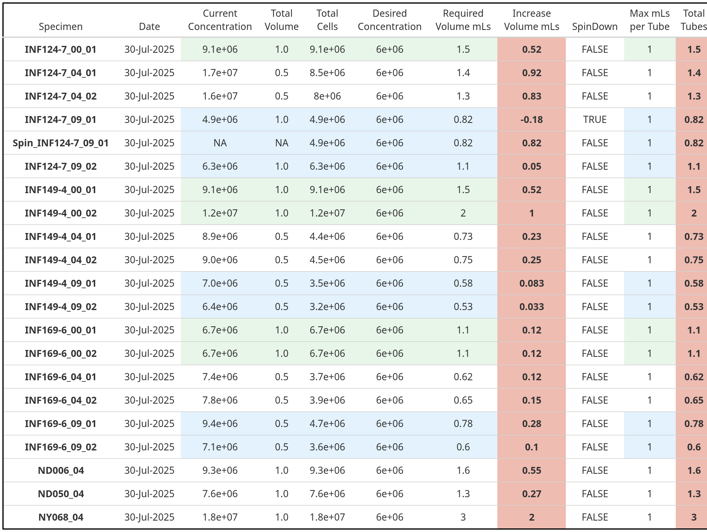
Since this all occurs at the level of a function, I think sequentially walking through this function creation would be a good bridging component for learning how to write your own functions. Granted, it may be too much, too quick, which is why this session is called “It’s Raining Functions!”, since it may ultimately viewed as a torrential downpour.
And with that, let’s brave the rain.

Planning
So based on our initial idea, we know that we will need to get our .fcs files into a GatingSet, which we will then be able to iterate through.
As we iterate through these files, we will need to retrieve the description/keyword for volume that was encoded by the instrument, as well as any other useful metadata.
And we will need to apply gates (either through openCyto or flowGate), that would allow us to retrieve the counts for various cell populations we might be wanting to retrieve concentration info for.
Let’s go ahead and tackle these in turn, re-using code that we have encountered over the last several weeks
Getting started, as always, we will need to load any libraries we will be using extensively.
library(flowWorkspace)As part of improvements to flowWorkspace, some behavior of
GatingSet objects has changed. For details, please read the section
titled "The cytoframe and cytoset classes" in the package vignette:
vignette("flowWorkspace-Introduction", "flowWorkspace")library(flowGate)Loading required package: ggcytoLoading required package: ggplot2Loading required package: flowCoreLoading required package: ncdfFlowLoading required package: BHlibrary(ggplot2)
library(ggcyto)
library(dplyr)
library(purrr)And then we need to identify our fcs files
# StorageLocation <- file.path("course", "09_Functions", "data") # Interactive path
StorageLocation <- file.path("data") # Quarto Rendering path
fcs_files <- list.files(StorageLocation, pattern=".fcs", full.names=TRUE)Before proceeding to add them into a GatingSet
MyCytoset <- load_cytoset_from_fcs(fcs_files, transformation=FALSE, truncate_max_range=FALSE)
MyGatingSet <- GatingSet(MyCytoset)For this particular counting fluorophore panel, only 3 antibodies were used. Since the goal was to quickly acquire the .fcs files before passing off to R, the files were never unmixed, and are still in a raw. fcs format. So we will need to figure out the peak detectors for APC, PE, and Pacific Blue on a 4-laser Cytek Aurora.
# remotes::install_github("DavidRach/Luciernaga")
# install.packages("plotly")
Plots <- Luciernaga::QC_ReferenceLibrary(FluorNameContains="APC$|PE$|Pacific Blue",
NumberDetectors=54, returnPlots=TRUE)[[2]]
plotly::ggplotly(Plots)So the equivalent raw detectors we should be paying attention to are going to be V3 (CD19+), B4 (CD45+), and R1 (CD14+)
Since scale can vary dramatically for individual fluorophores, we might as well and go ahead and transform those three detectors while we are here.
MainDetectorsOnly <- c("V3-A", "B4-A", "R1-A")
Biexponential <- flowjo_biexp_trans(channelRange=4096, maxValue=262144,
pos=4.5, neg=2, widthBasis=-500)
MyBiexTransform <- transformerList(MainDetectorsOnly, Biexponential)
transform(MyGatingSet, MyBiexTransform)A GatingSet with 9 samplesAnd a quick-plot check to make sure the transformation looks reasonable enough
ggcyto(MyGatingSet[[1]], subset="root",
aes(x="V3-A", y="R1-A")) + geom_hex(bins=100)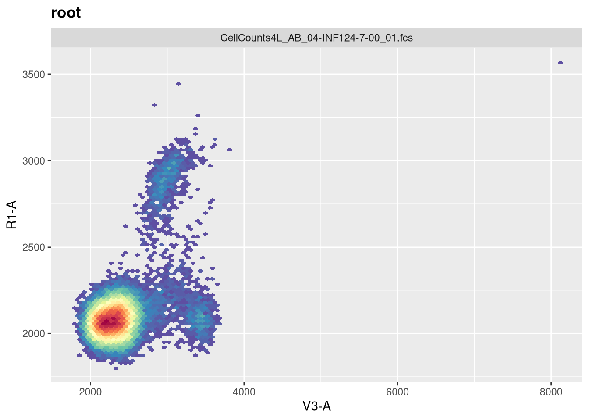
ggcyto(MyGatingSet[[1]], subset="root",
aes(x="V3-A", y="B4-A")) + geom_hex(bins=100)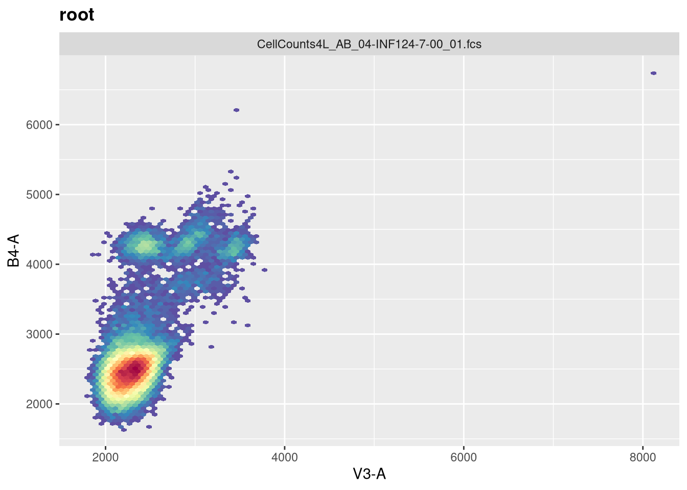
ggcyto(MyGatingSet[[1]], subset="root",
aes(x="R1-A", y="B4-A")) + geom_hex(bins=100)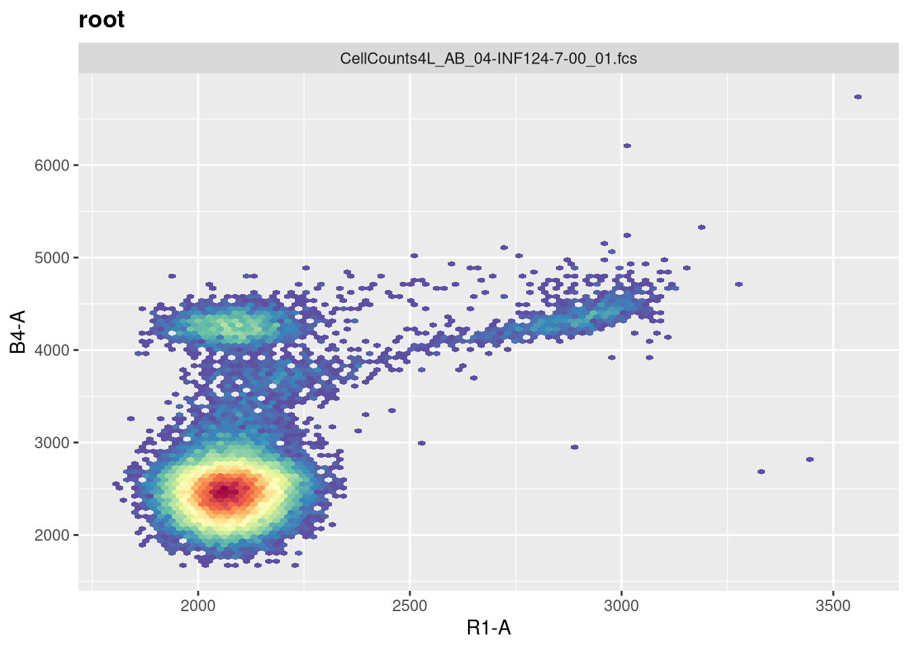
With that done, let’s add some gates to separate out CD45+ cells, and below those cells identify CD14+ (mainly monocytes), CD19+ (B cells), and CD14-CD19- (mostly T cells and NK cells for cord blood). My automated version uses openCyto with gate constraints to handle the variability, but for this example, lets reuse the flowGate approach using tribble function for quicker setup.
GatingTable <- tibble::tribble(
~filterId, ~dims, ~subset,
"CD45", list("B4-A", "SSC-A"), "root",
"CD19", list("V3-A", "SSC-A"), "CD45",
"CD14", list("R1-A", "SSC-A"), "CD45",
"TandNKcells", list("V3-A", "SSC-A"), "CD45",
)flowGate::gs_apply_gating_strategy(MyGatingSet, gating_strategy = GatingTable)And add a general CD45+ gate (i.e. those that I need actual concentration for)
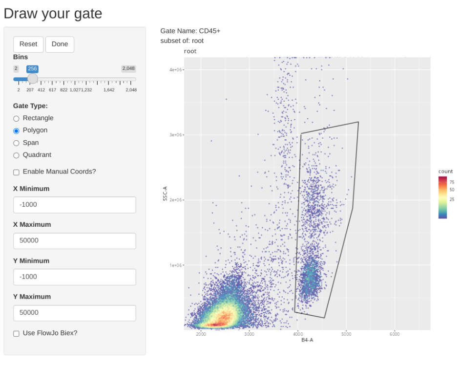
And add a general CD19+ gate (B cells)
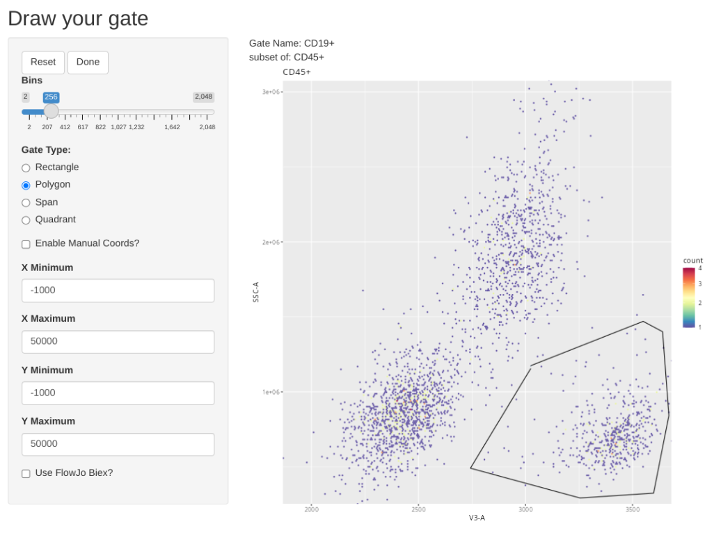
And add a general CD14+ (Monocytes)
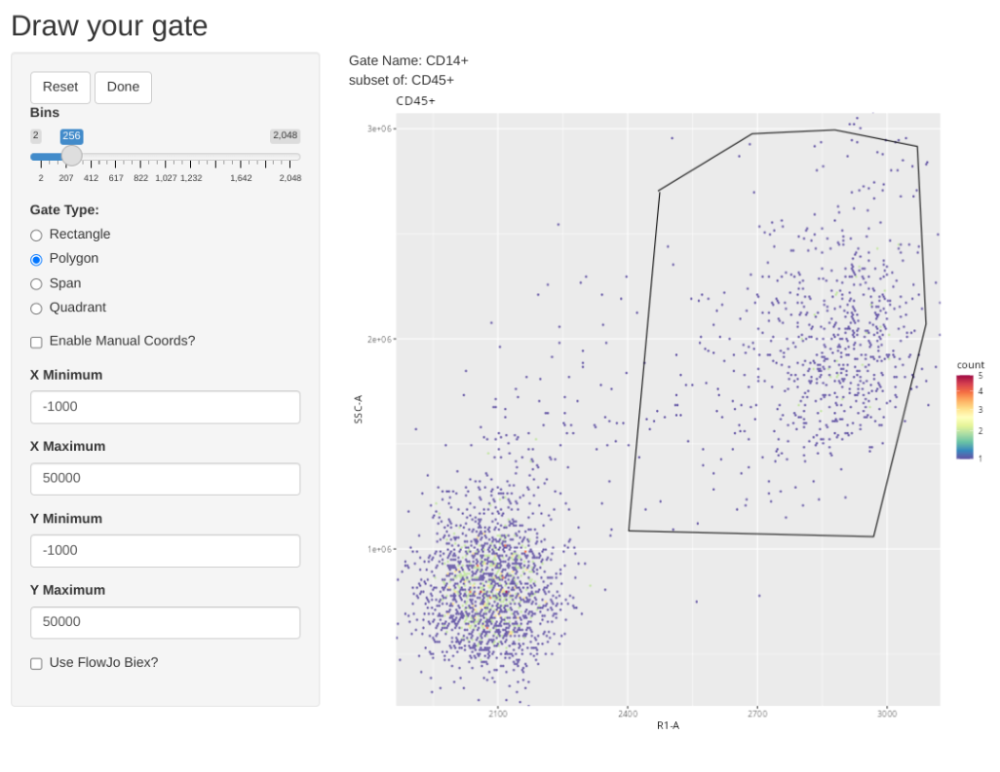
And add a general gate for likely T and NK cells
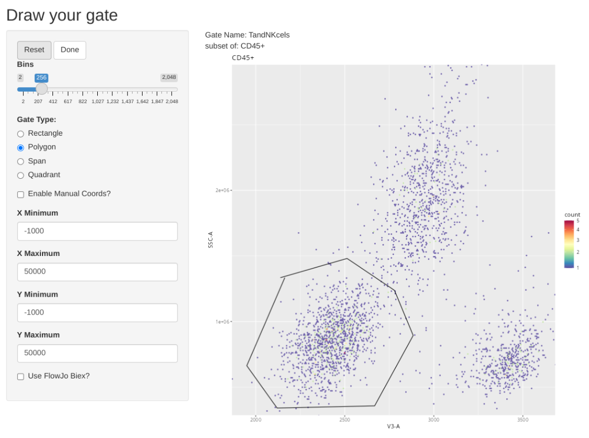
Ending up with a GatingSet that looks like this.
plot(MyGatingSet)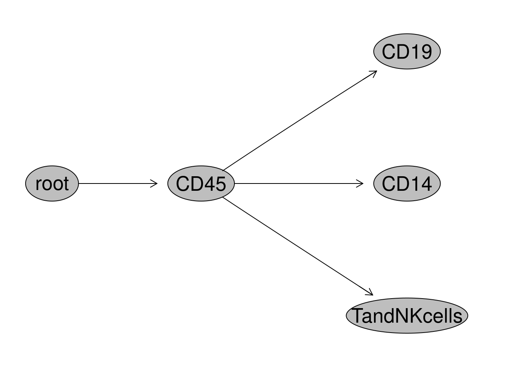
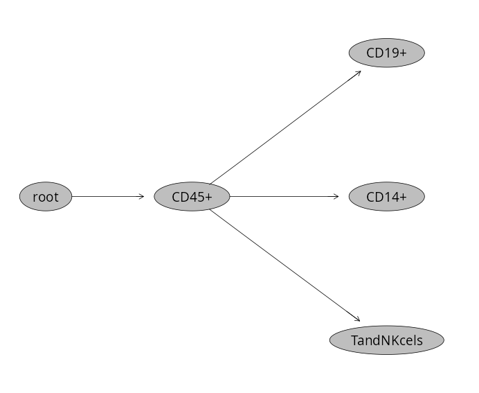
And with that done, let’s quickly check the gates using ggcyto autoplot() function, switching between specimen index values to double check.
ggcyto::autoplot(MyGatingSet[[6]]) + theme_bw()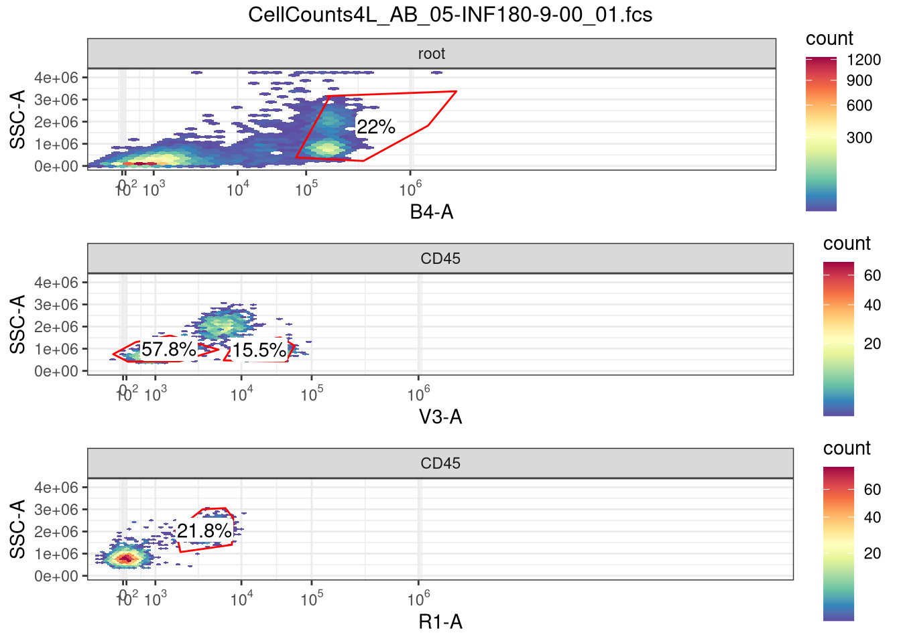
Building
Alright, lets start by creating the first layer of our function
CellConcentration <- function(){
}At the moment, our function is literally nothing but a wrapper, but when we run the line of code, it is now present under the variables tab.
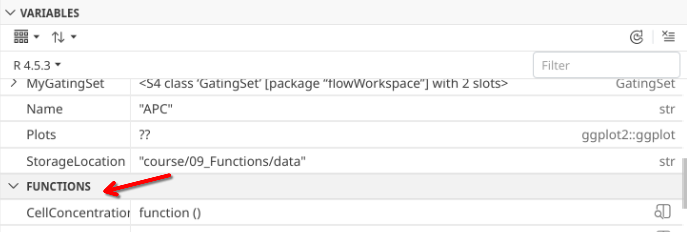
Lets start by considering what we want to do. We have each of our .fcs files currently contained within a GatingSet object. Ultimately, we want to be able to retrieve the cell concentration from each of these files.
To do so, lets go ahead and plan that we will use the map() function to iterate our way through each specimen of the GatingSet object
pData(MyGatingSet)$name[1] "CellCounts4L_AB_04-INF124-7-00_01.fcs"
[2] "CellCounts4L_AB_04-INF149-4-00_01.fcs"
[3] "CellCounts4L_AB_04-INF169-6-00_01.fcs"
[4] "CellCounts4L_AB_05-INF019-0-00_01.fcs"
[5] "CellCounts4L_AB_05-INF032-5-00_01.fcs"
[6] "CellCounts4L_AB_05-INF180-9-00_01.fcs"
[7] "CellCounts4L_AB_06-INF155-1-00_01.fcs"
[8] "CellCounts4L_AB_06-INF158-4-00_01.fcs"
[9] "CellCounts4L_AB_06-INF159-5-00_01.fcs"Since when we iterate with map() we need to specify a .x argument, let’s go ahead and set that as our argument within the ().
CellConcentration <- function(x){
}And to make our lives a little easier, we should provide some function documentation as we go, so that future us several months from now can remember what under-caffenaited us today did. In R, this typically is done via what is known as a roxygen2 skeleton, which looks like this.
#' This function will figure out the cell concentration
#' for a given gated population in an .fcs file
#'
#' @param x A GatingSet object (typically iterated in)
#'
CellConcentration <- function(x){
}In a Roxygen skeleton, we use a modified comment (#’) format to identify this as documentation. The start is a generic description for our function. The @ param is used to list the individual argument, and a short description of what it does.
Alright, with that bit of documentation done so that we can contextualize what we did later, let’s go back and think mechanics. We will be passing our function through map(), so our line of code that we will run will look something like this
purrr::map(.x=MyGatingSet, .f=CellConcentration)As map is triggered, we will basically be indexing our way through MyGatingSet, similar to if we ran the lines of code like this
MyGatingSet[[1]]Sample: CellCounts4L_AB_04-INF124-7-00_01.fcs
GatingHierarchy with 5 gatesMyGatingSet[[2]]Sample: CellCounts4L_AB_04-INF149-4-00_01.fcs
GatingHierarchy with 5 gatesLet’s go ahead and add something inside our function so we can get a readout of what is happening inside the function. Let’s use our old-friend class() to confirm what is being passed in via map().
#' This function will figure out the cell concentration
#' for a given gated population in an .fcs file
#'
#' @param x A GatingSet object (typically iterated in)
#'
CellConcentration <- function(x){
class(x)
}purrr::map(.x=MyGatingSet, .f=CellConcentration)[[1]]
[1] "GatingHierarchy"
attr(,"package")
[1] "flowWorkspace"
[[2]]
[1] "GatingHierarchy"
attr(,"package")
[1] "flowWorkspace"
[[3]]
[1] "GatingHierarchy"
attr(,"package")
[1] "flowWorkspace"
[[4]]
[1] "GatingHierarchy"
attr(,"package")
[1] "flowWorkspace"
[[5]]
[1] "GatingHierarchy"
attr(,"package")
[1] "flowWorkspace"
[[6]]
[1] "GatingHierarchy"
attr(,"package")
[1] "flowWorkspace"
[[7]]
[1] "GatingHierarchy"
attr(,"package")
[1] "flowWorkspace"
[[8]]
[1] "GatingHierarchy"
attr(,"package")
[1] "flowWorkspace"
[[9]]
[1] "GatingHierarchy"
attr(,"package")
[1] "flowWorkspace"So passing through map, we are ending up with invidual “GatingHierarchy” (GatingSet = 1).
So with a GatingHierarchy object inside, let’s turn to seeing what flowWorkspace functions we can use to get our desired outputs out of the description/keyword list.
#' This function will figure out the cell concentration
#' for a given gated population in an .fcs file
#'
#' @param x A GatingSet object (typically iterated in)
#'
CellConcentration <- function(x){
keyword(x)
}Let’s also set map() to only target the first specimen in MyGatingSet for now
KeywordList <- purrr::map(.x=MyGatingSet[1], .f=CellConcentration)
head(KeywordList[[1]], 20)$FCSversion
[1] "3.0999999"
$`$BEGINDATA`
[1] "15152"
$`$ENDDATA`
[1] "8436079"
$`$BEGINANALYSIS`
[1] "0"
$`$ENDANALYSIS`
[1] "0"
$`$BEGINSTEXT`
[1] "0"
$`$ENDSTEXT`
[1] "0"
$`$MODE`
[1] "L"
$`$BYTEORD`
[1] "1,2,3,4"
$`$DATATYPE`
[1] "F"
$`$PAR`
[1] "61"
$`$TOT`
[1] "34512"
$`$NEXTDATA`
[1] "0"
$`$TIMESTEP`
[1] "0.0001"
$`$DATE`
[1] "30-Jul-2025"
$`$BTIM`
[1] "13:48:10.76"
$`$ETIM`
[1] "13:48:37.88"
$`$OP`
[1] "David Rach"
$`$INST`
[1] "UMBC"
$`$CYT`
[1] "Aurora"Alright, so we have access to the internal .fcs file keywords, similar to what we saw during Week 03. We can check through the full list and see what might be useful for us for this targeted problem, and within the function isolate them to their own respective variables for subsequent use.
#' This function will figure out the cell concentration
#' for a given gated population in an .fcs file
#'
#' @param x A GatingSet object (typically iterated in)
#'
CellConcentration <- function(x){
Volume <- keyword(x)$`$VOL`
}purrr::map(.x=MyGatingSet[1], .f=CellConcentration)[[1]]
[1] "30.99"As you can see, since we have changed the internal code within the function, we are now getting back the value recorded for acquired volume when our function is run.
#' This function will figure out the cell concentration
#' for a given gated population in an .fcs file
#'
#' @param x A GatingSet object (typically iterated in)
#'
CellConcentration <- function(x){
Date <- keyword(x)$`$DATE` # Day-Month-Year
InstrumentSerial <- keyword(x)$`$CYTSN`
TotalFileEvents <- keyword(x)$`$TOT`
Specimen <- keyword(x)$GUID
StartTime <- keyword(x)$`$BTIM`
EndTime <- keyword(x)$`$ETIM`
Volume <- keyword(x)$`$VOL`
}purrr::map(.x=MyGatingSet[1], .f=CellConcentration)[[1]]
[1] "30.99"You will notice however that despite finding all these other keywords, we are only getting back the volume as an output. The reason for this is a function returns by default the last object created within it. We can change this by setting a return() value equal to something else.
#' This function will figure out the cell concentration
#' for a given gated population in an .fcs file
#'
#' @param x A GatingSet object (typically iterated in)
#'
CellConcentration <- function(x){
Date <- keyword(x)$`$DATE` # Day-Month-Year
InstrumentSerial <- keyword(x)$`$CYTSN`
TotalFileEvents <- keyword(x)$`$TOT`
Specimen <- keyword(x)$GUID
StartTime <- keyword(x)$`$BTIM`
EndTime <- keyword(x)$`$ETIM`
Volume <- keyword(x)$`$VOL`
return(InstrumentSerial)
}purrr::map(.x=MyGatingSet[1], .f=CellConcentration)[[1]]
[1] "V0333"In this case, we are just retrieving individual bits and pieces. Ideally, we will want to cobble these together into a “data.frame” row or column so that we get everything back in a single go, and have a dataset that can then be used for tidyverse filtering, plotting, etc.
One thing to notice,there is a Total Events (TOT) keyword.
#' This function will figure out the cell concentration
#' for a given gated population in an .fcs file
#'
#' @param x A GatingSet object (typically iterated in)
#'
CellConcentration <- function(x){
Date <- keyword(x)$`$DATE` # Day-Month-Year
InstrumentSerial <- keyword(x)$`$CYTSN`
TotalFileEvents <- keyword(x)$`$TOT`
Specimen <- keyword(x)$GUID
StartTime <- keyword(x)$`$BTIM`
EndTime <- keyword(x)$`$ETIM`
Volume <- keyword(x)$`$VOL`
return(TotalFileEvents)
}purrr::map(.x=MyGatingSet[1], .f=CellConcentration)[[1]]
[1] "34512"This however corresponds to every event in the .fcs file, including doublets, debris, and miscellaneous cell populations, nothing specific to our individually drawn gates.
What we can do instead, is use a flowWorkspace function we learned about during Week 05, namely the gs_pop_get_data() function.
MySubset <- gs_pop_get_data(MyGatingSet[[1]], "root")
nrow(MySubset)[[1]][1] 34512The main purpose for gs_pop_get_data() is to reach through the pointer and retrieve the data associated with a particular gate. We can then assess this subsetted data using our regular R functions.
You may have noticed the subset argument. We can switch it out for the respective gate names to retrieve the counts for cells present within each.
TheSubset <- gs_pop_get_data(MyGatingSet[1], "CD45")
nrow(TheSubset)$`CellCounts4L_AB_04-INF124-7-00_01.fcs`
[1] 2787TheSubset <- gs_pop_get_data(MyGatingSet[1], "CD14")
nrow(TheSubset)$`CellCounts4L_AB_04-INF124-7-00_01.fcs`
[1] 699TheSubset <- gs_pop_get_data(MyGatingSet[1], "CD19")
nrow(TheSubset)$`CellCounts4L_AB_04-INF124-7-00_01.fcs`
[1] 532TheSubset <- gs_pop_get_data(MyGatingSet[1], "TandNKcells")
nrow(TheSubset)$`CellCounts4L_AB_04-INF124-7-00_01.fcs`
[1] 1344As you can see, we can access the counts for the cells found within the respective gate by providing the gate name as the second argument. Let’s modify our function, to add subset argument
#' This function will figure out the cell concentration
#' for a given gated population in an .fcs file
#'
#' @param x A GatingSet object (typically iterated in)
#' @param subset The gate from which to retrieve cell counts from
#'
CellConcentration <- function(x, subset){
Date <- keyword(x)$`$DATE` # Day-Month-Year
InstrumentSerial <- keyword(x)$`$CYTSN`
TotalFileEvents <- keyword(x)$`$TOT`
Specimen <- keyword(x)$GUID
StartTime <- keyword(x)$`$BTIM`
EndTime <- keyword(x)$`$ETIM`
Volume <- keyword(x)$`$VOL`
EventsInTheGate <- gs_pop_get_data(x, subset)
Cells <- nrow(EventsInTheGate)
return(Cells)
}purrr::map(.x=MyGatingSet[1], .f=CellConcentration, subset="CD45")[[1]]
[[1]]$`CellCounts4L_AB_04-INF124-7-00_01.fcs`
[1] 2787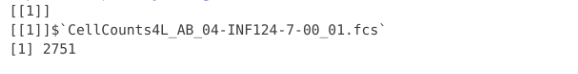
Alright, we have now found all the bits and pieces we will likely need to estimate cell concentration. Let’s start by making sure that Volume is switched over to numeric (as keywords can often be stored as character values)
#' This function will figure out the cell concentration
#' for a given gated population in an .fcs file
#'
#' @param x A GatingSet object (typically iterated in)
#' @param subset The gate from which to retrieve cell counts from
#'
CellConcentration <- function(x, subset){
Date <- keyword(x)$`$DATE` # Day-Month-Year
InstrumentSerial <- keyword(x)$`$CYTSN`
TotalFileEvents <- keyword(x)$`$TOT`
Specimen <- keyword(x)$GUID
StartTime <- keyword(x)$`$BTIM`
EndTime <- keyword(x)$`$ETIM`
Volume <- keyword(x)$`$VOL`
Volume <- as.numeric(Volume)
EventsInTheGate <- gs_pop_get_data(x, subset)
Cells <- nrow(EventsInTheGate)
return(Cells)
}Next, remembering our C1V1 = C2V2, we can set up the formula
#' This function will figure out the cell concentration
#' for a given gated population in an .fcs file
#'
#' @param x A GatingSet object (typically iterated in)
#' @param subset The gate from which to retrieve cell counts from
#'
CellConcentration <- function(x, subset){
Date <- keyword(x)$`$DATE` # Day-Month-Year
InstrumentSerial <- keyword(x)$`$CYTSN`
TotalFileEvents <- keyword(x)$`$TOT`
Specimen <- keyword(x)$GUID
StartTime <- keyword(x)$`$BTIM`
EndTime <- keyword(x)$`$ETIM`
Volume <- keyword(x)$`$VOL`
Volume <- as.numeric(Volume)
EventsInTheGate <- gs_pop_get_data(x, subset)
Cells <- nrow(EventsInTheGate)[[1]] #[[1]] since the output is in a list
Concentration <- (Cells*1000)/Volume
return(Concentration)
}And let’s check across our specimens:
purrr::map(.x=MyGatingSet, .f=CellConcentration, subset="CD19")[[1]]
[1] 17166.83
[[2]]
[1] 10410.6
[[3]]
[1] 6653.684
[[4]]
[1] 14538.89
[[5]]
[1] 7865.535
[[6]]
[1] 13439.64
[[7]]
[1] 16709.76
[[8]]
[1] 12720.61
[[9]]
[1] 4170.708In the case for our counting tubes, after staining they were diluted 1:100. So we need to add a dilution multiplier to the above. We can set that as our third argument.
#' This function will figure out the cell concentration
#' for a given gated population in an .fcs file
#'
#' @param x A GatingSet object (typically iterated in)
#' @param subset The gate from which to retrieve cell counts from
#' @param dilutionMultiplier Multiplies the estimated concentration
#' to bring correct digits.
#'
CellConcentration <- function(x, subset, dilutionMultiplier){
Date <- keyword(x)$`$DATE` # Day-Month-Year
InstrumentSerial <- keyword(x)$`$CYTSN`
TotalFileEvents <- keyword(x)$`$TOT`
Specimen <- keyword(x)$GUID
StartTime <- keyword(x)$`$BTIM`
EndTime <- keyword(x)$`$ETIM`
Volume <- keyword(x)$`$VOL`
Volume <- as.numeric(Volume)
EventsInTheGate <- gs_pop_get_data(x, subset)
Cells <- nrow(EventsInTheGate)[[1]] #[[1]] since the output is in a list
Concentration <- (Cells*1000)/Volume
Concentration <- Concentration*dilutionMultiplier
return(Concentration)
}purrr::map(.x=MyGatingSet, .f=CellConcentration, subset="CD19", dilutionMultiplier=100)[[1]]
[1] 1716683
[[2]]
[1] 1041060
[[3]]
[1] 665368.4
[[4]]
[1] 1453889
[[5]]
[1] 786553.5
[[6]]
[1] 1343964
[[7]]
[1] 1670976
[[8]]
[1] 1272061
[[9]]
[1] 417070.8With this calculated, we can now proceed to data tidying to make sure everything important gets returned back to us as an individual row.
#' This function will figure out the cell concentration
#' for a given gated population in an .fcs file
#'
#' @param x A GatingSet object (typically iterated in)
#' @param subset The gate from which to retrieve cell counts from
#' @param dilutionMultiplier Multiplies the estimated concentration
#' to bring correct digits.
#'
CellConcentration <- function(x, subset, dilutionMultiplier){
Date <- keyword(x)$`$DATE` # Day-Month-Year
InstrumentSerial <- keyword(x)$`$CYTSN`
TotalFileEvents <- keyword(x)$`$TOT`
Specimen <- keyword(x)$GUID
StartTime <- keyword(x)$`$BTIM`
EndTime <- keyword(x)$`$ETIM`
Volume <- keyword(x)$`$VOL`
Volume <- as.numeric(Volume)
EventsInTheGate <- gs_pop_get_data(x, subset)
Cells <- nrow(EventsInTheGate)[[1]] #[[1]] since the output is in a list
Concentration <- (Cells*1000)/Volume
Concentration <- Concentration*dilutionMultiplier
Data <- data.frame(
Date=Date,
InstrumentSerial=InstrumentSerial,
Specimen=Specimen,
StartTime=StartTime,
EndTime=EndTime,
Volume=Volume,
Cells=Cells,
Concentration=Concentration
)
return(Data)
}purrr::map(.x=MyGatingSet[1], .f=CellConcentration, subset="CD19", dilutionMultiplier=100)[[1]]
Date InstrumentSerial Specimen
1 30-Jul-2025 V0333 CellCounts4L_AB_04-INF124-7-00_01.fcs
StartTime EndTime Volume Cells Concentration
1 13:48:10.76 13:48:37.88 30.99 532 1716683And we can use the dplyr package bind_rows() to assemble all our outputs for the individual .fcs files
Dataset <- purrr::map(.x=MyGatingSet, .f=CellConcentration, subset="CD19", dilutionMultiplier=100) |> bind_rows()Dataset Date InstrumentSerial Specimen
1 30-Jul-2025 V0333 CellCounts4L_AB_04-INF124-7-00_01.fcs
2 30-Jul-2025 V0333 CellCounts4L_AB_04-INF149-4-00_01.fcs
3 30-Jul-2025 V0333 CellCounts4L_AB_04-INF169-6-00_01.fcs
4 04-Aug-2025 V0333 CellCounts4L_AB_05-INF019-0-00_01.fcs
5 04-Aug-2025 V0333 CellCounts4L_AB_05-INF032-5-00_01.fcs
6 04-Aug-2025 V0333 CellCounts4L_AB_05-INF180-9-00_01.fcs
7 06-Aug-2025 V0333 CellCounts4L_AB_06-INF155-1-00_01.fcs
8 06-Aug-2025 V0333 CellCounts4L_AB_06-INF158-4-00_01.fcs
9 06-Aug-2025 V0333 CellCounts4L_AB_06-INF159-5-00_01.fcs
StartTime EndTime Volume Cells Concentration
1 13:48:10.76 13:48:37.88 30.99 532 1716682.8
2 13:33:43.49 13:34:09.95 30.93 322 1041060.5
3 13:40:42.92 13:41:10.01 30.81 205 665368.4
4 13:41:23.34 13:41:50.51 30.47 443 1453889.1
5 13:35:13.99 13:35:41.15 30.64 241 786553.5
6 13:48:19.41 13:48:46.83 30.73 413 1343963.6
7 13:45:36.08 13:46:03.30 30.94 517 1670976.1
8 13:39:27.95 13:39:54.12 30.03 382 1272061.3
9 13:52:09.56 13:52:36.75 30.93 129 417070.8And now with our dataset complete, we can save it out for later use.
StorageLocation <- file.path("C:", "User", "FulanoDeTal", "Desktop")
StorageLocationAndName <- file.path(StorageLocation, "CellConcentrationsForTodaysExperiment.csv")
write.csv(Dataset, StorageLocationAndName, row.names=FALSE)Discussion
In this session, we survived the downpour that is creating functions in R. We looked at both relatively simple examples (to get an idea of the general syntax) as well as step-by-step built out the cell concentration to get a better fundamental understanding of how some of these more targeted applications take various inputs and arguments, run code using these inputs, and then return us a specified output. We also ventured into iteration and how the purrr package can help us in this regard.
I would like to re-emphasize that this material is a lot, and that feeling like you will need to revisit this topic is to be expected. When I first encountered a for-loop, I didn’t know what to do with it. By the time I had figured it out, I couldn’t envision how to write a function or iterate through a vector. Figuring out how to do so takes time, and often arises more out of targeted need. You want to do something for your cytometry pipeline, but are tired of copying and pasting with minor changes, you end up generalizing it into a function.
I also highly recommend looking at the additional resources, because in the end, learning about the concepts from different perspectives is always helpful, since every instructors focus will differ.
Fortunately, now that we have encountered functions and iteration, we will gradually see more examples in context of focused application as we head into the next section. We will start focusing on acquiring some of the toolsets we need for high-dimensional and unsupervised analysis, starting next time with how to downsample events from individual .fcs files, concatenate them together, and write them to a new .fcs file that won’t be immediately corrupt on import into your favorite commercial software.

Additional Resources
Riffomonas Project: A tutorial for writing functions in R
Riffomonas Project: Repeat an R function with the tidyverse, purrr and furrr
Take-home Problems
Problem 1
Modify one of the simpler functions (SecondFunction or similar), provide your own argument names, and modify the message(), paste0 or print() functions to print a text style output. Generate a small vector of values, and iterate through your vector using one of the approaches we used.
Problem 2
Using the initial framework for the CellConcentration function, retrieve several other keywords that are of interest, and incorporate them into the returned data.frame row.
Problem 3
For CellConcentration, we retrieved both start and end time. Look up information on lubridate package, convert these times to a time-style format, and from acquired volume derrive uL/min at which each .fcs file was acquired. Did this vary at all across days?